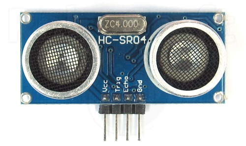
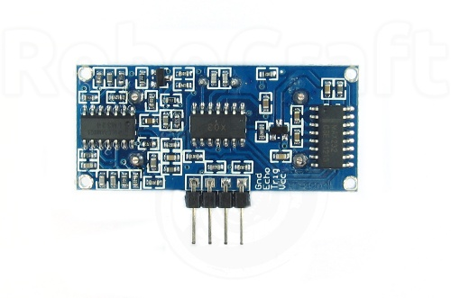
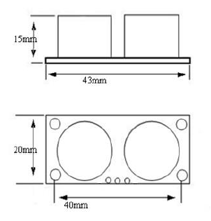
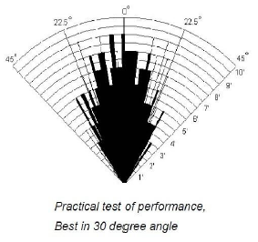
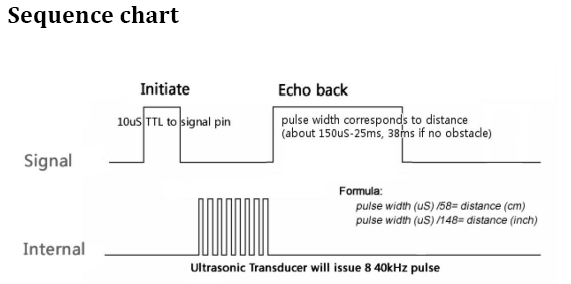
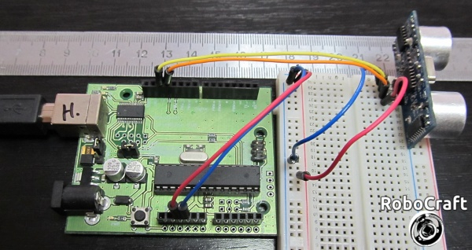

Рассмотрим ультразвуковой датчик измерения расстояния
HC-SR04 (Ultrasonic ranging module HC-SR04).

Особенности
Напряжение питания:
5V DC
Ток покоя:
<2mA
Эффективный угол:
<15°
Диапазон измерения расстояния:
2–400 cm
Разрешение:
0.3 cm

Разъём сенсора — 4 обычных пина (2.54), что позволяет просто воткнуть его в беспаечную плату, припаять к макетной плате или использовать для подключения обычные пины (типа мама).
Размеры

Диаграмма направленности

Принцип работы
Сенсор излучает короткий ультразвуковой импульс (в момент времени 0), который отражается от объекта и принимается сенсором. Расстояние рассчитывается исходя из времени до получения эха и скорости звука в воздухе.

Т.о., сенсор получает сигнал эха, и выдаёт расстояние, которое кодируется длительностью электрического сигнал на выходе датчика (Echo).
Следующий импульс может быть излучён, только после исчезновения эха от предыдущего. Это время называется периодом цикла (cycle period). Рекомендованный период между импульсами должен быть не менее
50 мс.
Если на сигнальный пин (Trig) подаётся импульс длительностью
10 мкс, то ультразвуковой модуль будет излучать восемь пачек ультразвукового сигнала с частотой
40кГц и обнаруживать их эхо. Измеренное расстояние до объекта пропорционально ширине эха (Echo) и может быть рассчитано по формуле, приведённой на графике выше.
Документация на сенсор, так же указывает, что если никаких препятствий не обнаружено, то на выходе будет сигнал с длительностью 38ms.
Arduino и HC-SR04
Подключить датчик очень просто

— можно удобно воткнуть его в беспаечную макетную плату, подключить +5V и GND от контроллера Arduino и подключить выводы датчика Trig и Echo к цифровым пинам контроллера.